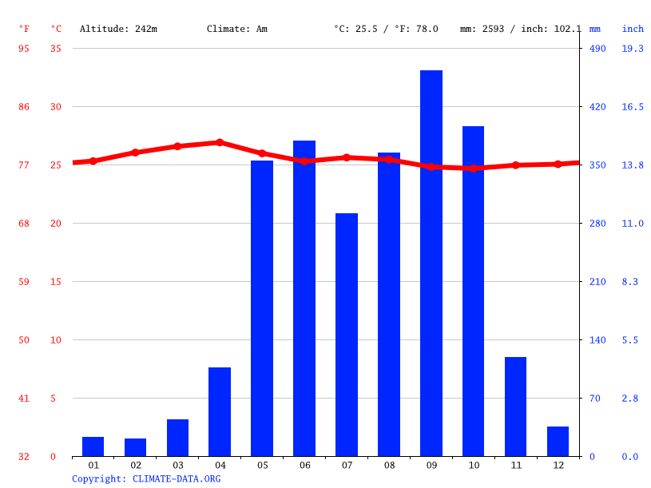
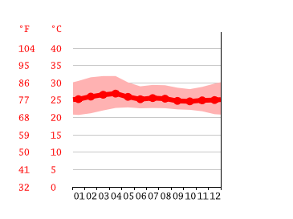

Clima Según la Clasificación de Köppen, su clima predomina el Monzónico o Subecuatorial (Am). Su orografía es uno de los factores importantes, por eso las temperaturas promedio son altas, y por estar situado en la veriente del Océano Pacífico, su variabilidad es nula. Debido a sus condiciones orográficas, en la temporada de lluvias recibe precipitaciones altas, los cuales promedian los 3,100 mm anuales, esto a que la humedad proveniente del Océano Pacífico es muy fuerte (incluidos las ondas tropicales del este que son muy perceptibles en la mayoría de los municipios de baja altitud), y la combinación de las altas temperaturas, provocan lluvias copiosas y constantes. [ocultar]Gnome-weather-few-clouds.svg Parámetros climáticos promedio de Retalhuleu WPTC Meteo task force.svg Mes Ene. Feb. Mar. Abr. May. Jun. Jul. Ago. Sep. Oct. Nov. Dic. Anual Temp. máx. media (°C) 32.2 32.2 33.8 32.9 32.9 31.9 32.1 32.2 30.7 30.5 30.6 30.6 31.9 Temp. media (°C) 25.4 25.6 27.4 27.0 27.6 26.9 27.1 27.0 26.0 25.6 25.3 24.7 26.3 Temp. mín. media (°C) 18.7 19.1 21.0 21.1 22.3 22.0 22.1 21.8 21.3 20.7 20.1 18.8 20.8 Precipitación total (mm) 12 17 46 130 362 527 439 419 563 490 126 23 3154
<  